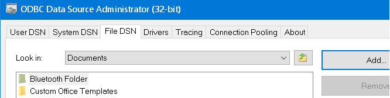

To create an ODBC connection to an external database hosted on SQL Server,PostGres etc
Settings > Setup ODBC data sources
From here you have 3 choices

In early versions of MS Access the .DSN file had to be named the same as the database and placed in the same directory. This is no longer required but does make it simple to keep track of which .DSN file applies to each database file.
The majority of Office 2010 and 2016 installations are 32 bit, a 64 bit copy of MS Access cannot open a 32 bit .MDE or .ACCDE file, but you can recompile 32-bit .mde, .ade, and .accde files to make them 64-bit compatible.
As of the release of Office 2019, Microsoft now recommend installing the 64-bit version of Office unless you have a specific need which still requires the 32-bit version.
Some SQL servers are installed with more than one instance on the same machine, in those cases Access will require the port no.
The port number can be found by running the following SQL on the server:
USE master
GO
xp_readerrorlog 0, 1, NServer is listening on
GOThen define the DSN string in the File DSN as Server64,NNNNN where Server64 is the Server name and NNNNN is the Port number.
Examples:
X:\databases\contacts.accde
X:\databases\contacts.DSN
\\server64\dbshare\contacts.accde
\\server64\dbshare\contacts.DSN
The DSN file is a simple text file which can be edited with any text editor.
“A hidden connection is stronger than an obvious one” ~ Heraclitus of Ephesus
Related Links:
Upsize an Access database to SQL Server.
Assign a static port to a SQL Server named instance.
connectionstrings.com - connection strings for various hosts.